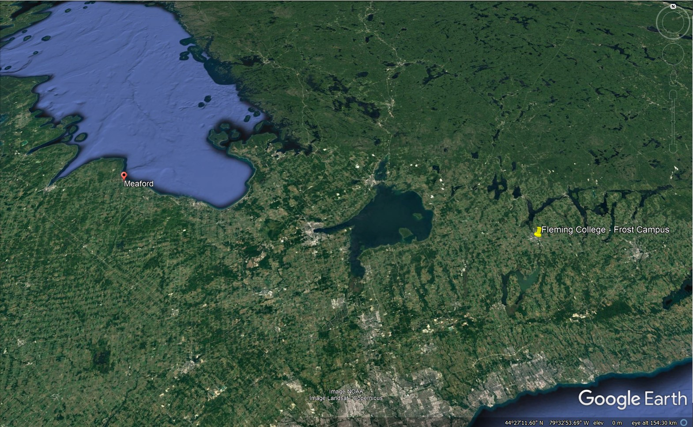
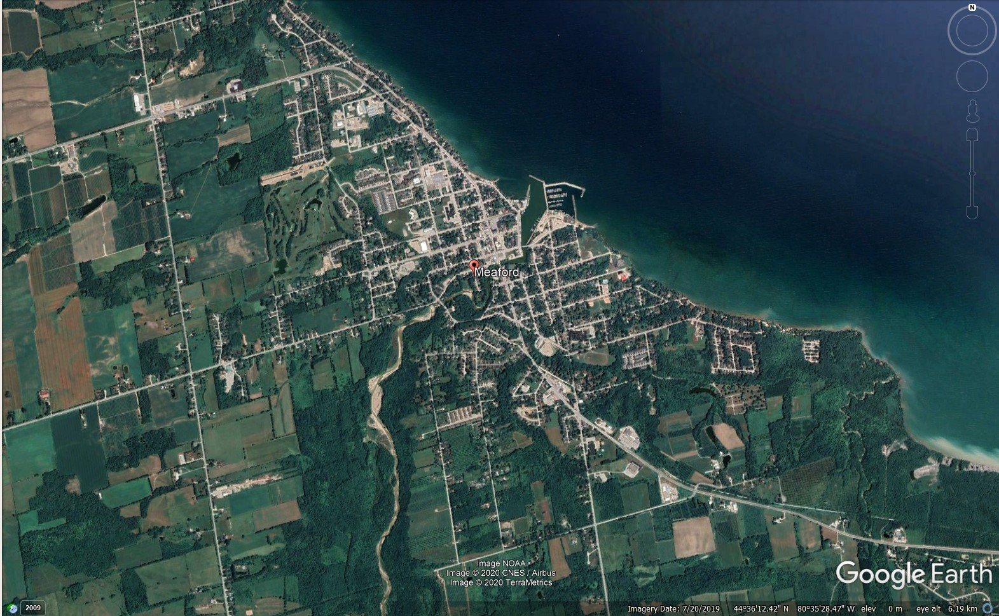

Welcome! I'm Nicholas Pretli (most people call me "Nick", but I nearly always reserve "Nicholas" for more formal purposes).
McMaster University (BSc), 2020
I'm a recent graduate of McMaster University with a background in Geography, Environmental Studies/Science, and some additional courses in Psychology.
I decided to enroll in the Geographic Information Systems Cartographic Specialist program at Fleming College in an effort to strengthen my technical skills, and to couple these technical skills with the more theoretical background that I obtained at university. I attended Fleming College's open house in March 2020 without knowing much about the school or the program at the time, but I left with a great impression of the Frost Campus and its reputation for GIS. After that point, I knew Fleming was for me.
Over the last 8 years across high school and university, I've worked as a lift operator, general labourer, office assistant, research assistant, and at a bakery.
I'm from a small harbourfront community in Grey County, Ontario called Meaford. The 'joke' of the town is that the population has remained relatively steady for the past 30 years, capping at around 4,500 for the town (~11,000 for the municipality). The town is within a half hour's drive from the communities of Owen Sound, Collingwood, and the popular Blue Mountain ski resort (I'm not much of a skiier)
I spent the majority of my time at university residing in the Westdale neighbourhood of Hamilton, Ontario.  
I consider myself a bit of a music geek: I play a couple instruments (mostly guitar and piano these days), and I played the cello in elementary and high school. I've also tried out several other instruments (drums, trombone, and the alto saxophone).
I learned how to drive a car with a manual transmission when I was 16 years old, and after significant struggle at first, I am now a devout enthusiast. Learning was 100% worth it; it's the way to drive.
My parents are both high school teachers at the school I attended (and one semester, my dad was my teacher!)